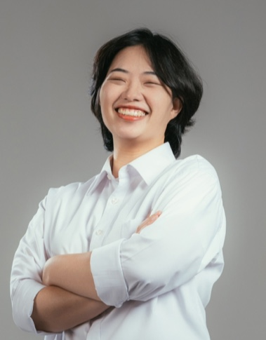

LEE_SUYEON
데이터 과학자 이수연
Email Me
GitHub
Notion
인공지능 기반 기차 대차 이상 소음 위치 감지 시스템 구축
🏆 데이터 경진대회 (인공지능 기반 기차 대차 이상 소음 위치 감지 시스템 구축)
기간
: 2023년 9월 ~ 2023년 11월
역할
: 데이터 분석, 모델링, 수학적 알고리즘
기술 스택
: Python, Pandas, Scikit-Learn
성과
: 최종 발표 단계까지 진행함으로써 여러 모델링의 기본적 지식을 습득하고 데이터들이 시사하는 정보가 무엇인지 파악하는 것 역시 중요하다는 것을 알게됨
설명
: 타겟이 없는 상태에서 유의미한 인사이트를 발견하기 위함
유퀴즈 머신러닝
🚀 유퀴즈 데이터를 이용한 머신러닝 분석
기간
: 2024.02월 ~ 2024.02월
역할
: 날짜 별 EDA, 시청률 모델링
기술 스택
: Python, Pandas, Scikit-Learn
성과
: 시청률 분석에 높은 정확도를 예측할 수 있는 모델링
설명
: 유퀴즈 라는 프로그램을 통해 우리가 아는 사람이 나온다면 시청률 과 조회수가 어떻게 될까?
대구 교통사고 피해 예측 AI 경진대회
🏅 데이콘 경진대회 (대구 교통사고 피해 예측 AI 경진대회)
기간
: 2024년 1월 ~ 2024년 2월
역할
: 데이터 분석, 모델링
기술 스택
: Python, Pandas, Scikit-Learn
성과
: 0.429 점대로 마무리 하였으나 1등과 0.04점대 차이를 확인함으로써 차이점을 확인하고 인사이트 발견의 생각의 폭을 넓히는 계기가 됨
설명
: 제공된 데이터를 이용하여 새로운 인사이트를 얻고 제공된 데이터 외에 다른 데이터들을 함께 사용함으로써 정확한 예측 모델링을 만들기 위한 대회
노인들을 위한 나라 웹사이트 제작
🚀 노인들을 위한 나라 웹사이트 제작
기간
: 2023년 8월 ~ 2023년 9월
역할
: 백엔드 개발
기술 스택
: Node.js, Spring Boot, mysqlDB
설명
: 노인 사용자들의 편의성을 고려하여 디자인된 웹사이트 개발에 참여. 사용자 인터페이스와 백엔드 로직을 담당하여, 노인 사용자들이 쉽게 정보를 접근하고 이용할 수 있도록 구현.